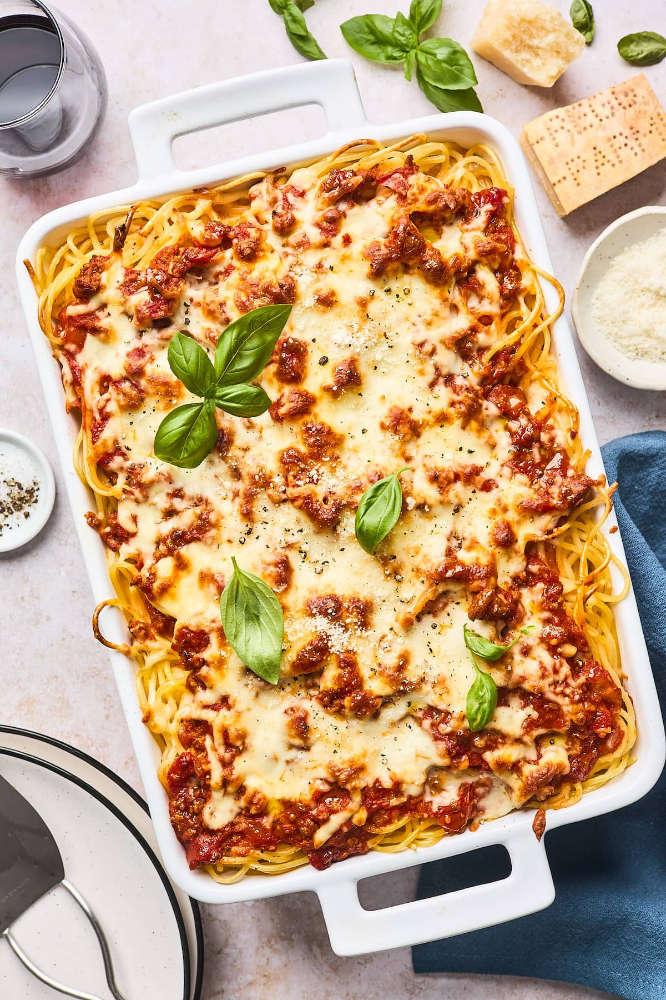

Baked Spaghetti

Description:
Easy baked spaghetti made quickly in the oven.Use different cheeses to create your signature dish.
Ingredients:
- ¾ pound lean ground beef
- 1 (16) ounce jar spaghetti sauce
- 1 pound spaghetti
- 1 cup shredded mild cheddar cheese
Steps:
- Preheat the oven to 350 degrees F (175 degrees C).
- Cook beef in a large skillet over medium-high heat until crumbly and bronw, 8 to 10 minutes. Stir spaghetti sauce into beef. Reduce heat and simmer.
- Meanwhile, bring a large pot of lightlty salted water to a boil. Stir in spaghetti; cook until al dente, 8 to 10 minutes. Drain.
- Add spaghetti to meat mixture; mix well. Transfer to 9x13-inch dish. Top with cheddar cheese.
- Bake in the preheated oven until heated through and cheese is bubbly, about 30 minutes.
- Enjoy!